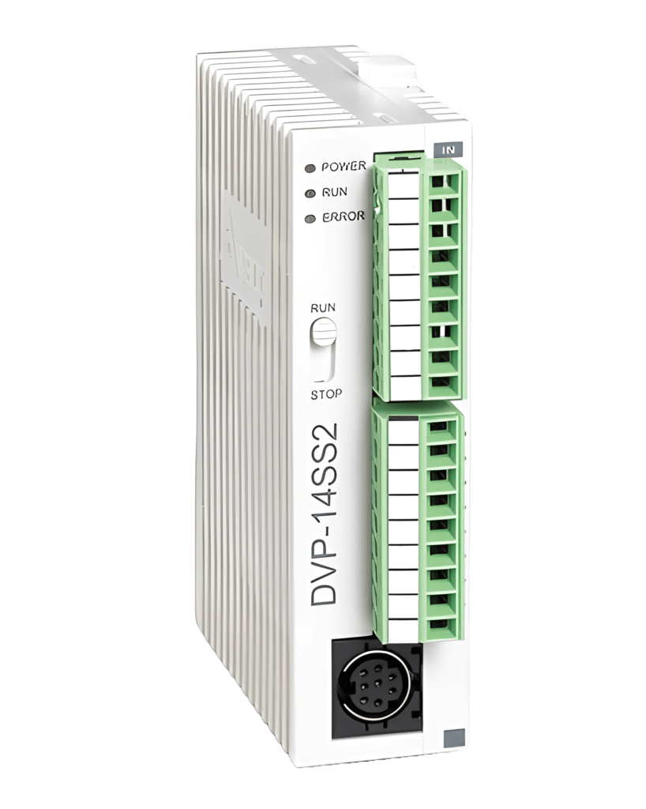

Controladores Lógicos Programables (PLC)
Una línea del tiempo interactiva con los hitos más relevantes en la historia de los PLC
Tecnologias __ HTML / CSS / JS puro
¿Por qué ha sido una pieza clave en la historia?
Los PLCs revolucionaron la industria al permitir una automatización fiable y flexible: sustituyeron paneles de relés por controladores reprogramables, facilitando cambios, reduciendo errores y acelerando la puesta en marcha. Además mejoraron la fiabilidad y el mantenimiento, disminuyendo paradas y costes, y posibilitaron la integración con redes, SCADA e IoT para modernizar y escalar procesos.